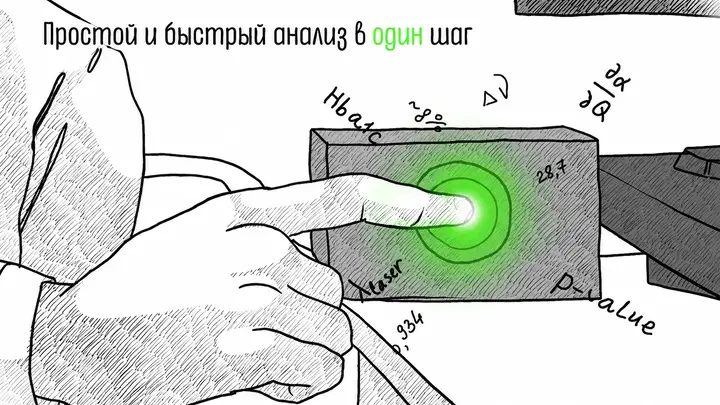
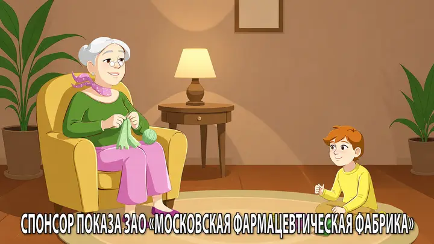

Продуктовая история
Короткая формулировка проблемы, роль решения, последовательность действий и ключевой результат.
Медтех / продукт / коммуникация
У MedTech-продукта есть сложная механика и несколько аудиторий. Помогаю собрать историю, в которой видны путь пользователя, место технологии и практическая ценность — без перегруза терминами.
Продуктовая логика
Клиницисту важен рабочий сценарий и границы применения. Руководителю — место решения в процессе. Партнёру — смысл продукта и следующий шаг.
Одна история должна оставаться точной, но меняться по глубине и формату для каждого разговора.
Что можно собрать
Состав выбираем после разбора аудитории, исходных данных и способа использования.
Короткая формулировка проблемы, роль решения, последовательность действий и ключевой результат.
Интерфейс, процесс, данные или невидимую камере механику показываем без лишней эффектности.
Демонстрация, конференция, сайт, презентация, письмо и короткий follow-up после встречи.
Решения по графике и тону, которые можно продолжать в других материалах продукта.
Для кого объясняем
Перед производством полезно разложить один продукт на несколько путей просмотра.
Сценарий применения, источник данных, границы и место решения в практике.
Путь команды, интеграция, роли и понятный результат внедрения.
Рынок, польза, отличие и проверяемые основания для следующего разговора.
Ясный язык в пределах утверждённых медицинских формулировок.
Опубликованный кейс Anix
Для медицинского AI-продукта команда Anix создала короткий объясняющий ролик-визитку. Задача — представить продукт врачам, клиникам и участникам конференции без перегруженной технологической подачи.
Визуальный язык продолжился в презентационных материалах. Публичных данных о влиянии ролика на продажи нет.
Полный кейс Anix ↗
Hemotech AI / объяснение продуктаМой вклад
Бэкграунд в молекулярной биофизике помогает разбирать сложную механику. Режиссура и продуктовая стратегия — выбирать, что зритель увидит первым, как поймёт связь и что сможет сделать после просмотра.
Обо мне и научных публикациях →Смежное направление
Если задача связана с механизмом действия, данными исследования, врачебной коммуникацией или запуском препарата, для неё есть отдельная система материалов Anix Medicine.
Фармацевтическое направление →
Фарма / Anix MedicineСледующий шаг
Разберём, для кого нужна история, какие материалы уже есть и какой формат поможет начать разговор.